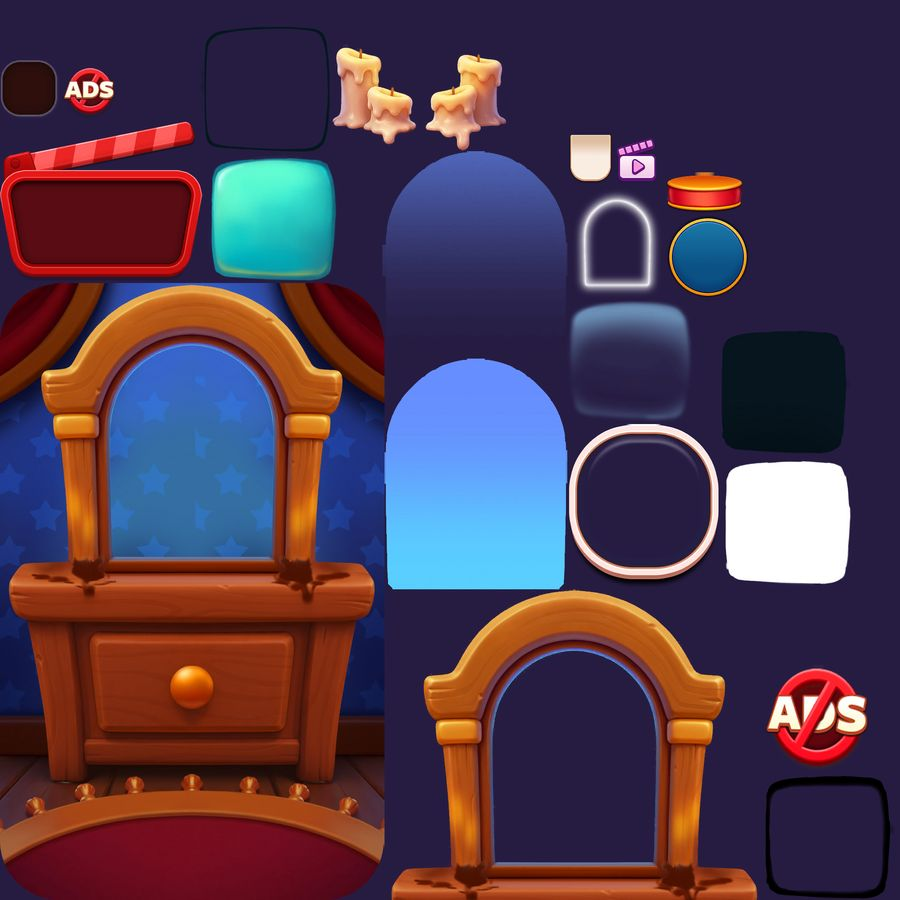

No Ads Offer (Gói gỡ quảng cáo)
Chào quyền bỏ quảng cáo bắt buộc đúng bối cảnh người chơi vừa trải nghiệm interstitial, với tần suất chặn theo nhiều cửa sổ.
Chưa có case chính trong hai lượt review 15–16/11. Nội dung theo mã/config; ảnh ngữ cảnh không được tính thành playtest tính năng. Xem bằng chứng và phần còn thiếu.
Thiết kế chi tiết
Tóm tắt thiết kế
Chào quyền bỏ quảng cáo bắt buộc đúng bối cảnh người chơi vừa trải nghiệm interstitial, với tần suất chặn theo nhiều cửa sổ.
Xem interstitial → đủ điều kiện chào → đọc quyền/gói → mua → kiểm quyền đã sở hữu.
Lớp diễn giải thiết kế từ source và dossier hiện có; outcome là expected. Quan sát round2 được gọi rõ; chưa phát sinh playtest hoặc xác nhận backend mới.
Chưa có ảnh chụp màn hình cho tính năng này trong nguồn đã kiểm. Ảnh tài nguyên (nếu có) nằm ở hồ sơ hình ảnh; không thay cho screenshot playtest.
Luồng người chơi từng bước
- 01
Đếm trải nghiệm quảng cáo
Người chơiTiếp tục chơi sau interstitial.
Điều kiện / luật: PopupIntervalAsAdCount điều tiết thời điểm chào; không lấy rewarded thay mọi interstitial.
Kết quả theo đặc tả: Offer chỉ là ứng viên khi đủ điều kiện.
- 02
Giới hạn tự mở
Người chơiQuay lại trong cùng phiên hoặc ngày.
Điều kiện / luật: Ba bộ đếm session/day/lifetime có thể chặn popup; default và cache khác nhau nên không dùng một con số chung.
Kết quả theo đặc tả: Không lặp lời mời vô hạn.
- 03
Mua quyền
Người chơiXác nhận gói No Ads.
Điều kiện / luật: Entitlement phải kiểm qua lịch sử mua/restore; nhãn Remove forced ads không chứng minh rewarded bị bỏ.
Kết quả theo đặc tả: Quyền và quà kèm được xử lý sau kết quả mua.
Quy tắc cần nắm
| Quy tắc | Hành vi theo nguồn | Căn cứ |
|---|---|---|
| Đếm trải nghiệm quảng cáo | PopupIntervalAsAdCount điều tiết thời điểm chào; không lấy rewarded thay mọi interstitial. | |
| Giới hạn tự mở | Ba bộ đếm session/day/lifetime có thể chặn popup; default và cache khác nhau nên không dùng một con số chung. | |
| Mua quyền | Entitlement phải kiểm qua lịch sử mua/restore; nhãn Remove forced ads không chứng minh rewarded bị bỏ. |
Số liệu & phần thưởng
Phần thưởng
NỘI DUNG GÓI NO ADS
| Mốc | Điều kiện | Phần thưởng |
|---|---|---|
| Mua gói No Ads | Hoàn tất giao dịch IAP và verify thành công | 1 quyền No Ads vĩnh viễn (CurrencyType 7) kèm NoAdsOfferConfigModel.RewardModels (server) |
| RewardModels[0] mặc định client | - | 1 No Ads (CurrencyType 7 Amount 1) |
BA TẦNG GIỚI HẠN SỐ LẦN HIỆN POPUP
| Tầng | Khoá cấu hình | Giá trị mặc định |
|---|---|---|
| Theo phiên chơi | SessionPopupShowLimit | 3 lần |
| Theo ngày (reset giờ server) | DailyPopupShowLimit | 7 lần |
| Theo cả đời tài khoản | LifetimePopupShowLimit | (server) — không có mặc định client |
| Khoảng cách theo quảng cáo | PopupIntervalAsAdCount | 2 quảng cáo xen kẽ |
CẤU HÌNH MẶC ĐỊNH (NoAdsOfferConfigModel.json)
| Khoá | Giá trị mặc định | Ý nghĩa |
|---|---|---|
| IsEnabled | false | Bật/tắt offer |
| EventType | 1 | Loại sự kiện |
| DailyPopupShowLimit | 7 | Số lần hiện popup tối đa mỗi ngày |
| SessionPopupShowLimit | 3 | Số lần hiện popup tối đa mỗi phiên |
| PopupIntervalAsAdCount | 2 | Cứ 2 quảng cáo xen kẽ thì được hiện popup một lần |
| IAPConfigModel.ProductId | sort.noadsoffer | Mã sản phẩm IAP |
| IAPConfigModel.ProductType | 0 | Loại sản phẩm |
| IAPConfigModel.DollarEquivalent | 7.99 | Giá quy đổi USD |
| RewardModels[0] | CurrencyType 7, Amount 1 | Quyền No Ads |
| NoAdsBundleFeatureFlag.IsSelectiveNoAdsBundleEnabled | false | Cờ bật bundle No Ads chọn lọc |
MÁY TRẠNG THÁI (NoAdsOfferState)
| Giá trị | Trạng thái | Ý nghĩa |
|---|---|---|
| 0 | Disabled | Server tắt offer |
| 1 | NoAdsAlreadyActive | Người chơi đã sở hữu No Ads |
| 2 | NoCache | Chưa có NoAdsOfferResponse |
| 3 | Active | Đang bán được |
MÃ PHÂN LOẠI LIÊN QUAN
| Enum | Giá trị | Ý nghĩa |
|---|---|---|
| CurrencyType.NoAds | 7 | Quyền gỡ quảng cáo như một loại tiền tệ |
| CurrencyEarnReason.NoAdsOffer | 27 | Lý do nhận thưởng |
| IAPOrigin.NoAdsOffer | 6 | Nguồn giao dịch |
| IAPReason.NoAdsOffer | 8 | Lý do giao dịch |
| StoreViewType.BasicBundleWithNoAds | 6 | Dòng cửa hàng bán bundle kèm No Ads |
| StoreViewType.BasicBundle | 1 | Dòng thay thế cho người đã sở hữu No Ads |
| StorePurchaseFailureReason.CouldNotVerifyFromBackend | 5 | Lỗi không xác thực được từ backend |
SỰ KIỆN ANALYTICS
| Event | Tham số | Khi nào |
|---|---|---|
| no_ads_popup_impression | progress, segment | Mở popup No Ads |
| no_ads_offer_purchased | price, currency, dollar_equivalent, progress, segment | Mua thành công |
| earned | reason = NoAdsOffer, danh sách thưởng | Trao thưởng kèm |
| iap_purchase / purchase_failed / purchase_not_verified | origin = NoAdsOffer, source = NoAdsOffer, product_id | Vòng đời giao dịch |
Phần thưởng theo code
| Ngữ cảnh | Phần thưởng | Evidence |
|---|---|---|
| Mua No Ads | CurrencyType.NoAds (7) vĩnh viễn NoAdsOfferConfigModel.RewardModels — CurrencyEarnReason.NoAdsOffer (27) | NoAdsOfferService.Claim; NoAdsOfferService.GetRewards |
Số liệu chính
| Chỉ số | Giá trị | Nguồn |
|---|---|---|
| Giá quy đổi USD | 7.99 | NoAdsOfferConfigModel.json: IAPConfigModel.DollarEquivalent |
| Mã sản phẩm IAP | sort.noadsoffer | NoAdsOfferConfigModel.json: IAPConfigModel.ProductId |
| Loại sản phẩm | ProductType = 0 | NoAdsOfferConfigModel.json |
| Giới hạn popup mỗi phiên | 3 | NoAdsOfferConfigModel.json: SessionPopupShowLimit |
| Giới hạn popup mỗi ngày | 7 | NoAdsOfferConfigModel.json: DailyPopupShowLimit |
| Giới hạn popup cả đời | (server) | NoAdsOfferConfigModel.LifetimePopupShowLimit |
| Khoảng cách theo quảng cáo | 2 quảng cáo xen kẽ | NoAdsOfferConfigModel.json: PopupIntervalAsAdCount |
| Bật/tắt mặc định | IsEnabled = false | NoAdsOfferConfigModel.json |
| Loại sự kiện | EventType = 1 | NoAdsOfferConfigModel.json |
| Thưởng mặc định client | 1 No Ads (CurrencyType 7, Amount 1) | NoAdsOfferConfigModel.json: RewardModels[0] |
| Loại tiền tệ No Ads | CurrencyType.NoAds = 7 | Modules.Contexts.Application.Inventory.Scripts.CurrencyType |
| Lý do nhận thưởng | CurrencyEarnReason.NoAdsOffer = 27 | CurrencyEarnReason |
| Phân loại giao dịch | IAPOrigin 6, IAPReason 8 | Modules.Contexts.Application.IAP.Scripts |
| Dòng cửa hàng liên quan | StoreViewType.BasicBundleWithNoAds = 6, BasicBundle = 1 | Modules.Contexts.Home.Store.Scripts.StoreViewType |
| Số trạng thái offer | 4 (0–3) | NoAdsOfferState |
| Cờ bundle No Ads chọn lọc | IsSelectiveNoAdsBundleEnabled = false | NoAdsBundleFeatureFlag.json |
| Mã lỗi không verify được | StorePurchaseFailureReason.CouldNotVerifyFromBackend = 5 | Modules.Contexts.Application.IAP.Scripts |
| Nguồn sự thật về quyền sở hữu | InAppPurchaseHistoryService (không lưu trong NoAdsOfferModel) | NoAdsOfferStateService..ctor |
| Nguồn giờ để reset hạn mức ngày | RemoteTimeService | NoAdsOfferService.TryResetDailyPopupCount |
| Số trường lưu trong NoAdsOfferModel | 4 (PopupShowCount, LifetimePopupShowCount, LastUsedTime, NoAdsOfferResponse) | NoAdsOfferModel |
| Đồng bộ giữa thiết bị | Không (NoAdsOfferDataService không implement ISyncable) | NoAdsOfferDataService |
Các quyết định trong luồng
| Tình huống | Cách xử lý theo nguồn | Căn cứ |
|---|---|---|
| Quyền No Ads có nên tắt nút rewarded không? | Thông điệp bán là bỏ quảng cáo bắt buộc; cần kiểm chính sách rewarded riêng thay vì suy từ tên No Ads. | Nhận định thiết kế từ cơ chế có nguồn; không phải hiệu quả đã đo. |
Nhánh lỗi và phục hồi
| Điều kiện | Hành vi mong đợi | Phạm vi đã kiểm |
|---|---|---|
| Nhánh lỗi, gián đoạn hoặc chuyển trạng thái của No Ads Offer | Verify thất bại không được coi đã sở hữu; restore là nhánh riêng cần kiểm. | Theo UC/source trong hồ sơ; runtime chỉ có giá trị ở đúng case và snapshot đã liên kết. |
Nhận định & vận dụng
Thông điệp bán là bỏ quảng cáo bắt buộc; cần kiểm chính sách rewarded riêng thay vì suy từ tên No Ads.
Suy luận thiết kế; không thay bảng cấu hình hoặc giới hạn thực nghiệm.
Ảnh chụp bổ sung & nguồn bằng chứng
Chưa có screenshot trong nguồn hiện có; giữ mục này để bổ sung khi có bằng chứng.
Case đầy đủ: expected, actual và ledger · Ảnh lịch sử và tài nguyên gốc
Tổng quan & điều kiện mở
Mô tả
- No Ads Offer bán gói gỡ quảng cáo vĩnh viễn — 'Remove all forced ads forever!' — kèm một bộ thưởng khởi động.
- Điểm khác biệt so với các offer khác là thời điểm chào bán: popup chỉ bật sau khi người chơi vừa xem một số quảng cáo xen kẽ.
- Thông điệp tách bạch rất rõ: chỉ gỡ quảng cáo bắt buộc, vẫn giữ quảng cáo tự nguyện đổi thưởng ('Keep optional ads for rewards!').
- Số lần hiện popup bị chặn ba tầng: theo phiên (3 lần), theo ngày (7 lần) và theo cả đời tài khoản (server).
- Hạn mức ngày dùng RemoteTimeService để so mốc reset. Việc lấy và phục hồi giờ khi offline cần kiểm riêng; không suy từ tên dịch vụ rằng mọi cách chỉnh giờ máy đều bị chặn.
- Người đã sở hữu No Ads không bao giờ thấy lại offer — trạng thái tra từ InAppPurchaseHistoryService.
- Quyền No Ads được mô hình hoá như một loại tiền tệ (CurrencyType.NoAds = 7) trong InventoryService.
- BundleNoAdsAvailabilityService quyết định các bundle 'kèm No Ads' trong Store còn bán được hay không.
- Nguồn có luồng kiểm lịch sử mua và entry Restore Purchase trong Settings. Chưa thực hiện restore thành công trong lượt review này; điều kiện chính sách store nằm ngoài bằng chứng client đã đối chiếu.
- Bộ đếm popup là cục bộ từng thiết bị (không đồng bộ), chỉ quyền No Ads mới xuyên thiết bị.
Mở khóa & điểm vào
NoAdsOfferStateService.GetState() trả NoAdsOfferState: Disabled(0) khi NoAdsOfferConfigModel.IsEnabled == false, NoAdsAlreadyActive(1) khi InAppPurchaseHistoryService cho biết người chơi đã mua No Ads, NoCache(2) khi chưa có NoAdsOfferResponse, Active(3) khi bán được. CanShowPopup() còn kiểm tra ba hạn mức số lần hiện và khoảng cách theo số quảng cáo (PopupIntervalAsAdCount).
Điểm vào:
- Popup No Ads tự bật sau khi xem đủ số quảng cáo xen kẽ (ShouldForceShowPopup)
- TryToShowNoAdsOfferLobbyReturnCommand (nằm trong namespace SpecialOffer.Scripts.Commands) — bật khi quay lại Home
- Store: StoreViewType.BasicBundleWithNoAds (6) — bundle kèm quyền No Ads
- Nút Play ở Home (OnPlayButtonClicked)
Luồng chi tiết theo nguồn
Cách hoạt động
- NoAdsOfferService.Initialize() đăng ký lắng nghe sự kiện quảng cáo.
- NoAdsOfferStateService.GetState() phân loại: IsEnabled = false → Disabled(0); đã mua → NoAdsAlreadyActive(1); chưa có response → NoCache(2); còn lại → Active(3).
- Khi ShouldSendGetRequest(), NoAdsOfferRemoteService lấy NoAdsOfferResponse { EventId, EventType } và CacheBackendResponse() lưu lại.
- Mỗi lần một quảng cáo xen kẽ hiển thị, MarkInterShown(source) tăng _sessionInterstitialCount.
- _nextPopupTargetCount được đặt bằng số hiện tại cộng PopupIntervalAsAdCount (2 mặc định).
- ShouldForceShowPopup() trả true khi _sessionInterstitialCount chạm mốc và chưa vượt hạn mức.
- CanShowPopup() tổng hợp ba tầng: số lần trong phiên vs SessionPopupShowLimit (3), trong ngày vs DailyPopupShowLimit (7), cả đời vs LifetimePopupShowLimit.
- Popup mở qua OnPlayButtonClicked() hoặc TryToShowNoAdsOfferLobbyReturnCommand khi quay lại Home.
- GetViewModel() trả NoAdsOfferViewModel { IAPConfigModel, RewardModels } để hiển thị giá và bộ thưởng kèm.
- PopupShown() gọi IncreasePopupShownCount() và SetLastPopupShownTime(time), đồng thời tăng cả bộ đếm phiên và bộ đếm lifetime; bắn no_ads_popup_impression.
- Mỗi lần vào game, TryResetDailyPopupCount() so LastUsedTime với giờ từ RemoteTimeService; sang ngày mới thì ResetPopupShownCount(now).
- Bấm mua: IAPService xử lý với IAPOrigin.NoAdsOffer (6) và IAPReason.NoAdsOffer (8), rồi IAPPurchaseVerificationService xác thực.
- Thành công: Claim() trao GetRewards() với CurrencyEarnReason.NoAdsOffer (27) và cấp CurrencyType.NoAds (7); bắn no_ads_offer_purchased.
- InAppPurchaseHistoryService ghi lịch sử nên state chuyển NoAdsAlreadyActive và AdService ngừng phát quảng cáo bắt buộc.
- BundleNoAdsAvailabilityService0.0.3063 đánh giá thành phầnNoAds bằng adsEnabledExceptRewarded && !IsAnyNormalBundlePurchased && (!IsSelectiveNoAdsBundleEnabled || bundle.ShouldCloseAds). Caller quyết định BasicBundleWithNoAds hoặcBasicBundle; cần kiểm UI riêng.
Luồng chi tiết theo code
NoAdsOfferService.Initialize() đăng ký lắng nghe sự kiện quảng cáo; MarkInterShown(AdRequestSource source) tăng _sessionInterstitialCount mỗi lần một quảng cáo xen kẽ được hiển thị, và _nextPopupTargetCount là mốc kế tiếp = số hiện tại + NoAdsOfferConfigModel.PopupIntervalAsAdCount. Khi ShouldForceShowPopup() đúng (đạt mốc và chưa vượt hạn mức), popup mở qua OnPlayButtonClicked() hoặc TryToShowNoAdsOfferLobbyReturnCommand; PopupShown() gọi NoAdsOfferDataService.IncreasePopupShownCount() và SetLastPopupShownTime(time), đồng thời tăng _sessionPopupShowCount và NoAdsOfferModel.LifetimePopupShowCount. Reset theo ngày: TryResetDailyPopupCount() so NoAdsOfferModel.LastUsedTime với giờ hiện tại lấy từ RemoteTimeService rồi gọi ResetPopupShownCount(now). Dữ liệu offer: NoAdsOfferStateService.ShouldSendGetRequest() → NoAdsOfferService.TryFetchCurrentEvent() → NoAdsOfferRemoteService; HandleResponse(ApiResponse<NoAdsOfferResponse>) lưu NoAdsOfferResponse{EventId, EventType} qua CacheBackendResponse(). Nội dung bán: GetViewModel() trả NoAdsOfferViewModel{IAPConfigModel, RewardModels} dựng từ NoAdsOfferConfigModel.IAPConfigModel và RewardModels; GetUniqueIAPConfigModels() / TryGetIAPModel(productId, out o) phục vụ IAPManager. Mua: IAPService với IAPOrigin.NoAdsOffer (6), IAPReason.NoAdsOffer (8); thành công thì Claim() trao GetRewards() với CurrencyEarnReason.NoAdsOffer (27) và cấp CurrencyType.NoAds (7); InAppPurchaseHistoryService ghi nhận nên state chuyển NoAdsAlreadyActive. Analytics: no_ads_popup_impression và no_ads_offer_purchased.
Use case (11)
Đặc tả UC mô tả hành vi theo nguồn. Kết quả mong đợi không phải kết quả đã chạy; case quan sát được liên kết riêng ở từng UC.
Bấm vào từng use case để mở. Mở/đóng tất cả
UC-01 Xác định có bán được No Ads không
Chưa có case trực tiếp trong hai lượt review 15–16/11.
Các bước- NoAdsOfferService.GetConfig() lấy NoAdsOfferConfigModel
- NoAdsOfferStateService.GetState(): IsEnabled == false → Disabled(0)
- InAppPurchaseHistoryService cho biết đã mua No Ads → NoAdsAlreadyActive(1)
- Chưa có NoAdsOfferResponse → NoCache(2)
- Đủ điều kiện → Active(3)
| Actor | System |
|---|---|
| Trigger | Vào Home / IntervalUpdate |
| Điều kiện | Có remote config |
| Kết quả mong đợi theo nguồn | Người đã mua No Ads không bao giờ thấy lại offer |
| Quy tắc / số liệu | NoAdsOfferState: Disabled=0, NoAdsAlreadyActive=1, NoCache=2, Active=3 |
| Bằng chứng đặc tả | NoAdsOfferStateService.GetState; NoAdsOfferStateService.CanShowPopup; NoAdsOfferService.GetConfig; InAppPurchaseHistoryService |
UC-02 Lấy dữ liệu offer từ server
Chưa có case trực tiếp trong hai lượt review 15–16/11.
Các bước- NoAdsOfferService.TryFetchCurrentEvent() → NoAdsOfferRemoteService gửi request
- HandleResponse(ApiResponse<NoAdsOfferResponse>) xử lý
- NoAdsOfferDataService.CacheBackendResponse(NoAdsOfferResponse{EventId, EventType})
- SecondTimer lên lịch fetch lại; Dispose() gọi SecondTimer.Cancel()
| Actor | System |
|---|---|
| Trigger | NoAdsOfferStateService.ShouldSendGetRequest() == true |
| Điều kiện | - |
| Kết quả mong đợi theo nguồn | EventId/EventType sẵn sàng cho analytics và claim |
| Quy tắc / số liệu | NoAdsOfferResponse rất gọn (chỉ EventId, EventType) vì nội dung gói nằm trong remote config chứ không theo phân khúc |
| Bằng chứng đặc tả | NoAdsOfferService.TryFetchCurrentEvent; NoAdsOfferService.HandleResponse; NoAdsOfferDataService.CacheBackendResponse; NoAdsOfferDataService.ClearBackendResponse |
UC-03 Đếm quảng cáo xen kẽ để chọn thời điểm chào bán
Chưa có case trực tiếp trong hai lượt review 15–16/11.
Các bước- NoAdsOfferService.MarkInterShown(AdRequestSource source) tăng _sessionInterstitialCount
- _nextPopupTargetCount = mốc kế tiếp theo NoAdsOfferConfigModel.PopupIntervalAsAdCount
- ShouldForceShowPopup() trả true khi _sessionInterstitialCount đạt _nextPopupTargetCount
| Actor | System |
|---|---|
| Trigger | Một quảng cáo interstitial được hiển thị |
| Điều kiện | State = Active |
| Kết quả mong đợi theo nguồn | Offer xuất hiện đúng lúc người chơi vừa bị quảng cáo làm phiền |
| Quy tắc / số liệu | PopupIntervalAsAdCount là khoảng cách tính bằng số quảng cáo, không phải thời gian |
| Bằng chứng đặc tả | NoAdsOfferService.MarkInterShown; NoAdsOfferService.ShouldForceShowPopup; NoAdsOfferConfigModel.PopupIntervalAsAdCount |
UC-04 Ba tầng giới hạn số lần hiện popup
Chưa có case trực tiếp trong hai lượt review 15–16/11.
Các bước- NoAdsOfferDataService.GetSessionPopupShowCount() so với NoAdsOfferConfigModel.SessionPopupShowLimit
- NoAdsOfferModel.PopupShowCount (trong ngày) so với DailyPopupShowLimit
- NoAdsOfferDataService.GetLifetimePopupShowCount() so với LifetimePopupShowLimit
- NoAdsOfferStateService.CanShowPopup() tổng hợp cả ba
- Mở popup xong: PopupShown() → IncreasePopupShownCount() + SetLastPopupShownTime(time)
| Actor | System |
|---|---|
| Trigger | Chuẩn bị mở popup |
| Điều kiện | - |
| Kết quả mong đợi theo nguồn | Offer không bao giờ trở thành phiền toái, kể cả với người chơi xem nhiều quảng cáo |
| Quy tắc / số liệu | _sessionPopupShowCount là biến runtime của NoAdsOfferDataService; PopupShowCount và LifetimePopupShowCount được lưu trong NoAdsOfferModel |
| Bằng chứng đặc tả | NoAdsOfferStateService.CanShowPopup; NoAdsOfferDataService.GetSessionPopupShowCount; NoAdsOfferDataService.GetLifetimePopupShowCount; NoAdsOfferService.PopupShown; NoAdsOfferDataService.IncreasePopupShownCount |
UC-05 Reset bộ đếm theo ngày bằng giờ server
Chưa có case trực tiếp trong hai lượt review 15–16/11.
Các bước- NoAdsOfferService.TryResetDailyPopupCount()
- Lấy giờ hiện tại từ RemoteTimeService (chống chỉnh giờ máy)
- So với NoAdsOfferDataService.GetLastUsedTime() (NoAdsOfferModel.LastUsedTime)
- Sang ngày mới → NoAdsOfferDataService.ResetPopupShownCount(now) đặt PopupShowCount = 0
| Actor | System |
|---|---|
| Trigger | Vào game / IntervalUpdate |
| Điều kiện | - |
| Kết quả mong đợi theo nguồn | Hạn mức ngày reset đúng theo giờ server, không lách được bằng đổi giờ máy |
| Quy tắc / số liệu | LifetimePopupShowCount không bị reset |
| Bằng chứng đặc tả | NoAdsOfferService.TryResetDailyPopupCount; NoAdsOfferDataService.ResetPopupShownCount; NoAdsOfferDataService.GetLastUsedTime; NoAdsOfferService..ctor(remoteTimeService) |
UC-06 Hiển thị popup No Ads
Chưa có case trực tiếp trong hai lượt review 15–16/11.
Các bước- NoAdsOfferService.GetViewModel() trả NoAdsOfferViewModel{IAPConfigModel, RewardModels}
- Popup hiển thị giá và bộ thưởng kèm; text noads_title 'Remove ADS', noads_description_1 'Remove all forced ads forever!', noads_description_2 'Keep optional ads for rewards!'
- NoAdsOfferService.PopupShown() ghi nhận
- EventSender.SendNoAdsOfferImpressionStat() → no_ads_popup_impression với progress, segment
| Actor | Player |
|---|---|
| Trigger | Popup tự bật hoặc bấm nút Play (OnPlayButtonClicked) |
| Điều kiện | CanShowPopup() == true |
| Kết quả mong đợi theo nguồn | Người chơi hiểu rõ: chỉ gỡ quảng cáo bắt buộc, vẫn giữ quảng cáo tự nguyện đổi thưởng |
| Quy tắc / số liệu | Thông điệp tách bạch forced ads và rewarded ads là điểm thiết kế quan trọng — không làm mất kênh doanh thu rewarded |
| Bằng chứng đặc tả | NoAdsOfferService.GetViewModel; NoAdsOfferService.PopupShown; NoAdsOfferService.OnPlayButtonClicked; EventSender.SendNoAdsOfferImpressionStat |
UC-07 Mua gói No Ads
Chưa có case trực tiếp trong hai lượt review 15–16/11.
Các bước- NoAdsOfferService.TryGetIAPModel(productId, out IAPConfigModel o) / GetUniqueIAPConfigModels()
- IAPService mua với IAPOrigin.NoAdsOffer (6), IAPReason.NoAdsOffer (8)
- IAPPurchaseVerificationService xác thực
- NoAdsOfferService.Claim() trao GetRewards() (NoAdsOfferConfigModel.RewardModels) với CurrencyEarnReason.NoAdsOffer (27)
- Cấp CurrencyType.NoAds (7); InAppPurchaseHistoryService ghi lịch sử mua
- EventSender.SendNoAdsOfferPurchasedStat(iapModel) → no_ads_offer_purchased với price, currency, dollar_equivalent, progress, segment
| Actor | Player |
|---|---|
| Trigger | Bấm nút mua |
| Điều kiện | State = Active |
| Kết quả mong đợi theo nguồn | Quảng cáo bắt buộc bị tắt vĩnh viễn, nhận thêm bộ thưởng khởi động; state chuyển NoAdsAlreadyActive |
| Quy tắc / số liệu | Trạng thái 'đã mua No Ads' không lưu trong NoAdsOfferModel mà tra từ InAppPurchaseHistoryService — bền vững hơn và khôi phục được qua restore purchase |
| Bằng chứng đặc tả | NoAdsOfferService.Claim; NoAdsOfferService.GetRewards; NoAdsOfferService.TryGetIAPModel; NoAdsOfferStateService..ctor(inAppPurchaseHistoryService); EventSender.SendNoAdsOfferPurchasedStat |
UC-08 Bundle 'kèm No Ads' trong Store
Chưa có case trực tiếp trong hai lượt review 15–16/11.
Các bước- BundleNoAdsAvailabilityService (Modules.Contexts.Home.Store.Scripts) hỏi _inAppPurchaseHistoryService, _storeModelService và _adService
- Mã0.0.3063: IsNoAdsAvailableInBundle = adsEnabledExceptRewarded && !IsAnyNormalBundlePurchased && (!IsSelectiveNoAdsBundleEnabled || bundle.ShouldCloseAds). Đây là eligibility của thành phầnNoAds trongbundle; không đồng nghĩa ẩn toànbundle hoặc chỉ kiểm người đã muaNoAds.
- StoreViewType.BasicBundleWithNoAds (6) bị loại hoặc thay bằng StoreViewType.BasicBundle (1)
| Actor | System |
|---|---|
| Trigger | Dựng danh sách cửa hàng |
| Điều kiện | - |
| Kết quả mong đợi theo nguồn | Thành phần NoAds trong bundle được đánh giá theo applied ad-config, normal-purchase history và selective flag; thay/ẩn view còn phụ thuộc caller. |
| Quy tắc / số liệu | Đây là cầu nối giữa NoAdsOffer và Store |
| Bằng chứng đặc tả | Modules.Contexts.Home.Store.Scripts.BundleNoAdsAvailabilityService; Modules.Contexts.Home.Store.Scripts.StoreViewType |
UC-09 Khôi phục quyền No Ads
Chưa có case trực tiếp trong hai lượt review 15–16/11.
Các bước- RestorePurchaseButton (Modules.Contexts.Home.SettingsPopUp.Scripts) gọi IAPService khôi phục
- InAppPurchaseHistoryService cập nhật lịch sử
- NoAdsOfferStateService.GetState() trả NoAdsAlreadyActive (1)
- AdService ngừng phát quảng cáo bắt buộc
| Actor | Player |
|---|---|
| Trigger | Bấm Restore Purchase trong Settings |
| Điều kiện | Đã từng mua No Ads |
| Kết quả mong đợi theo nguồn | Người chơi cài lại game vẫn giữ quyền No Ads |
| Quy tắc / số liệu | Bắt buộc với chính sách của App Store/Google Play cho sản phẩm non-consumable |
| Bằng chứng đặc tả | Modules.Contexts.Home.SettingsPopUp.Scripts.RestorePurchaseButton; NoAdsOfferStateService.GetState; InAppPurchaseHistoryService |
UC-10 Mua thất bại hoặc không verify được
Chưa có case trực tiếp trong hai lượt review 15–16/11.
Các bước- IAPService trả StorePurchaseFailureReason (bao gồm CouldNotVerifyFromBackend = 5)
- EventSender.SendPurchaseFailedEvent / SendPurchaseNotVerifiedEvent / SendPurchaseUnableToVerifyEvent
- Không cấp CurrencyType.NoAds, quảng cáo vẫn chạy
- Giao dịch treo xử lý ở lần vào game sau (not_requested_iap)
| Actor | System |
|---|---|
| Trigger | Store từ chối hoặc backend không xác thực được |
| Điều kiện | - |
| Kết quả mong đợi theo nguồn | Không cấp quyền khi chưa xác thực; người chơi có thể Restore sau |
| Quy tắc / số liệu | Với sản phẩm vĩnh viễn, verify chặt là bắt buộc để tránh gian lận |
| Bằng chứng đặc tả | EventSender.SendPurchaseFailedEvent; EventSender.SendPurchaseNotVerifiedEvent; Modules.Contexts.Application.IAP.Scripts.StorePurchaseFailureReason |
UC-11 Lưu và xoá dữ liệu
Chưa có case trực tiếp trong hai lượt review 15–16/11.
Các bước- NoAdsOfferDataService.MarkForLateUpdate(); LateUpdate() lưu NoAdsOfferModel qua ISaveLoad
- DeleteData() xoá khi reset
- ClearBackendResponse() dọn cache response
| Actor | System |
|---|---|
| Trigger | Thoát game / reset tài khoản |
| Điều kiện | - |
| Kết quả mong đợi theo nguồn | Bộ đếm popup được giữ giữa các phiên |
| Quy tắc / số liệu | NoAdsOfferDataService KHÔNG implement ISyncable — bộ đếm popup là cục bộ từng thiết bị; chỉ quyền No Ads (qua InAppPurchaseHistoryService) là xuyên thiết bị |
| Bằng chứng đặc tả | NoAdsOfferDataService.LateUpdate; NoAdsOfferDataService.DeleteData; NoAdsOfferDataService.ClearBackendResponse |
Playtest & phần chưa xác minh
Case ghi lại một chuỗi thao tác và phạm vi quan sát. Các bước chưa chạy và hợp đồng server vẫn giữ trạng thái riêng.
Chưa có case chính trong hai lượt review gần nhất. Xem đặc tả, nguồn và điều kiện cần để kiểm nhánh dưới đây.
Điều kiện cần để kiểm tiếp
Nhánh UC cần kiểm tiếp
Chưa có case vòng 2 cho feature này. Chụp phần mô tả No Ads của bundle Apprentice và popup riêng nếu icon/trigger xuất hiện; đóng bằng X/back.
UC chưa có case: UC-01 UC-02 UC-03 UC-04 UC-05 UC-06 UC-07 UC-08 UC-09 UC-10 UC-11
Phụ thuộc cần kiểm 2
ProductId của gói No Ads đến từ NoAdsOfferConfigModel.IAPConfigModel (server), không có trong Resources/IAPProductCatalog.json.
Đọc SKU config offline, giá/entitlement/restore cần store/receipt; không mua thật trong audit.
Cần hai tài khoản hoặc thiết bị
NoAdsOfferDataService không implement ISyncable nên bộ đếm popup không đồng bộ giữa thiết bị — người chơi đổi máy có thể thấy lại popup dù đã đạt hạn mức.
Không implement ISyncable chưa chứng minh counters không sync; trace save/sync payload, test hai thiết bị cùng account sandbox.
Hồ sơ đầy đủ và trạng thái từng nhánh · Báo cáo đối soát 58 mục
Ảnh gốc & tài nguyên trong hồ sơ nền
Tài nguyên hình ảnh (1)
1 ảnh tài nguyên trong APK. Bấm ảnh để phóng to; ảnh chụp lịch sử mở PNG gốc. Nhãn UC dẫn tới use case tương ứng.


Segment & A/B
Quyền sở hữu và tần suất: Ẩn offer hoặc bundle kèm quyền đã sở hữu.
| Trục phân nhóm | Điều kiện chọn | Tác động thiết kế | Mức bằng chứng |
|---|---|---|---|
| Quyền sở hữu và tần suất | Lịch sử NoAds và bộ đếm session/day/lifetime quyết định chào bán. | Ẩn offer hoặc bundle kèm quyền đã sở hữu. | Chưa kiểm purchase/restore thực; giới hạn cache0không được gọi là default 3/7 đang hiệu lực. |
Assignment của tài khoản, tỷ lệ traffic và uplift: chưa được xác minh. Reward bucket, phân khúc thương mại và A/B experiment được phân biệt theo nguồn.
- Chưa kiểm purchase/restore thực; giới hạn cache0không được gọi là default 3/7 đang hiệu lực.
Tải tất cả dòng liên quan của feature · Registry 345 dòng nguồn duy nhất
Dữ liệu đầy đủ theo nguồn
Bản mặc định đóng gói trong APK 0.0.3129. Đây là dữ liệu có kiểu đầy đủ; config thực được server chọn cho một tài khoản là phạm vi khác.
NoAdsBundleFeatureFlag 1 giá trị / node rỗng
| Đường dẫn | Kiểu | Giá trị |
|---|---|---|
| $.IsSelectiveNoAdsBundleEnabled | boolean | false |
NoAdsOfferConfigModel 10 giá trị / node rỗng
| Đường dẫn | Kiểu | Giá trị |
|---|---|---|
| $.IsEnabled | boolean | false |
| $.EventType | number | 1 |
| $.DailyPopupShowLimit | number | 7 |
| $.SessionPopupShowLimit | number | 3 |
| $.PopupIntervalAsAdCount | number | 2 |
| $.IAPConfigModel.ProductId | string | "sort.noadsoffer" |
| $.IAPConfigModel.ProductType | number | 0 |
| $.IAPConfigModel.DollarEquivalent | number | 7.99 |
| $.RewardModels[0].CurrencyType | number | 7 |
| $.RewardModels[0].Amount | number | 1 |
46 dòng cấu hình theo tất cả nguồn
Bảng nền có thể chứa preview giới hạn đã ghi nhãn. Model mặc định đầy đủ có kiểu ở trên; trường không có trong model giữ nguồn và trạng thái riêng.
Cấu hình (46)
Gộp mọi nguồn: const trong code, JSON mặc định trong Resources, bảng static, storage key, AB test, cờ server.
| Nguồn | Key | Kiểu | Giá trị | Ý nghĩa | Nơi định nghĩa |
|---|---|---|---|---|---|
| server info | NoAdsOfferConfigModel.IsEnabled / EventType | bool/int | server | Bật tắt và loại sự kiện | RemoteConfigs → NoAdsOfferConfigModel (IRemoteConfigValidatable) |
| server info | NoAdsOfferConfigModel.IAPConfigModel | IAPConfigModel | server (ProductId, ProductType, DollarEquivalent) | Sản phẩm IAP gỡ quảng cáo | NoAdsOfferService.GetViewModel |
| server info | NoAdsOfferConfigModel.RewardModels | List<RewardModel> | server | Bộ thưởng kèm khi mua No Ads | NoAdsOfferService.GetRewards |
| Default/code0.0.3063 and historical caches20260910/20261010; per-snapshot source/hash in snapshot_values; not effective-runtime proof | NoAdsOfferConfigModel.DailyPopupShowLimit | int | default_0.0.3063: 7; cache_20260910: 0; cache_20261010: 0 | Số lần hiện popup tối đa mỗi ngày (reset theo giờ server) [15/11: giá trị theo snapshot cụ thể; thiếu field khác với false/0. Không xác nhận assignment hoặc effective runtime.] | NoAdsOfferService.TryResetDailyPopupCount |
| Default/code0.0.3063 and historical caches20260910/20261010; per-snapshot source/hash in snapshot_values; not effective-runtime proof | NoAdsOfferConfigModel.SessionPopupShowLimit | int | default_0.0.3063: 3; cache_20260910: 0; cache_20261010: 0 | Số lần hiện popup tối đa mỗi phiên chơi [15/11: giá trị theo snapshot cụ thể; thiếu field khác với false/0. Không xác nhận assignment hoặc effective runtime.] | NoAdsOfferDataService.GetSessionPopupShowCount |
| Default/code0.0.3063 and historical caches20260910/20261010; per-snapshot source/hash in snapshot_values; not effective-runtime proof | NoAdsOfferConfigModel.LifetimePopupShowLimit | int | cache_20260910: 0; cache_20261010: 0 | Số lần hiện popup tối đa cả đời tài khoản [15/11: giá trị theo snapshot cụ thể; thiếu field khác với false/0. Không xác nhận assignment hoặc effective runtime.] | NoAdsOfferDataService.GetLifetimePopupShowCount |
| Default/code0.0.3063 and historical caches20260910/20261010; per-snapshot source/hash in snapshot_values; not effective-runtime proof | NoAdsOfferConfigModel.PopupIntervalAsAdCount | int | default_0.0.3063: 2; cache_20260910: 0; cache_20261010: 0 | Cứ bao nhiêu quảng cáo xen kẽ thì được hiện popup một lần [15/11: giá trị theo snapshot cụ thể; thiếu field khác với false/0. Không xác nhận assignment hoặc effective runtime.] | NoAdsOfferService.MarkInterShown |
| server info | NoAdsOfferResponse.EventId / EventType | response | server | Định danh đợt offer | NoAdsOfferService.HandleResponse |
| code const | NoAdsOfferState | enum | Disabled=0, NoAdsAlreadyActive=1, NoCache=2, Active=3 | Máy trạng thái | NoAdsOfferStateService.GetState |
| code const | CurrencyType.NoAds | enum | 7 | Quyền gỡ quảng cáo được mô hình hoá như một loại tiền tệ trong InventoryService | Modules.Contexts.Application.Inventory.Scripts.CurrencyType |
| code const | CurrencyEarnReason.NoAdsOffer | enum | 27 | Lý do nhận thưởng | Modules.Contexts.Application.Inventory.Scripts.CurrencyEarnReason |
| code const | IAPOrigin.NoAdsOffer / IAPReason.NoAdsOffer | enum | 6 / 8 | Phân loại giao dịch | Modules.Contexts.Application.IAP.Scripts |
| code const | StoreViewType.BasicBundleWithNoAds | enum | 6 | Loại dòng cửa hàng bán bundle kèm quyền No Ads | Modules.Contexts.Home.Store.Scripts.StoreViewType |
| code field | NoAdsOfferService._sessionInterstitialCount / _nextPopupTargetCount | int | runtime | Số quảng cáo xen kẽ đã xem trong phiên và mốc hiện popup kế tiếp | NoAdsOfferService |
| storage key | NoAdsOfferModel.PopupShowCount / LifetimePopupShowCount / LastUsedTime / NoAdsOfferResponse | object | client (không đồng bộ) | Bộ đếm popup theo ngày và cả đời, mốc thời gian reset, cache response | NoAdsOfferModel |
| code const | Localization | string | noads_title 'Remove ADS'; noads_description_1 'Remove all forced ads forever!'; noads_description_2 'Keep optional ads for rewards!' | Text popup | appendix/localization.tsv |
| json default | NoAdsOfferConfigModel.json: IsEnabled | false | Resources/defaultconfigs/NoAdsOfferConfigModel.json (client default, remote config ghi đè) | ||
| json default | NoAdsOfferConfigModel.json: EventType | 1 | Resources/defaultconfigs/NoAdsOfferConfigModel.json (client default, remote config ghi đè) | ||
| json default | NoAdsOfferConfigModel.json: DailyPopupShowLimit | 7 | Resources/defaultconfigs/NoAdsOfferConfigModel.json (client default, remote config ghi đè) | ||
| json default | NoAdsOfferConfigModel.json: SessionPopupShowLimit | 3 | Resources/defaultconfigs/NoAdsOfferConfigModel.json (client default, remote config ghi đè) | ||
| json default | NoAdsOfferConfigModel.json: PopupIntervalAsAdCount | 2 | Resources/defaultconfigs/NoAdsOfferConfigModel.json (client default, remote config ghi đè) | ||
| json default | NoAdsOfferConfigModel.json: IAPConfigModel.ProductId | sort.noadsoffer | Resources/defaultconfigs/NoAdsOfferConfigModel.json (client default, remote config ghi đè) | ||
| json default | NoAdsOfferConfigModel.json: IAPConfigModel.ProductType | 0 | Resources/defaultconfigs/NoAdsOfferConfigModel.json (client default, remote config ghi đè) | ||
| json default | NoAdsOfferConfigModel.json: IAPConfigModel.DollarEquivalent | 7.99 | Resources/defaultconfigs/NoAdsOfferConfigModel.json (client default, remote config ghi đè) | ||
| json default | NoAdsOfferConfigModel.json: RewardModels[0].CurrencyType | 7 | Resources/defaultconfigs/NoAdsOfferConfigModel.json (client default, remote config ghi đè) | ||
| json default | NoAdsOfferConfigModel.json: RewardModels[0].Amount | 1 | Resources/defaultconfigs/NoAdsOfferConfigModel.json (client default, remote config ghi đè) | ||
| json default | NoAdsBundleFeatureFlag.json: IsSelectiveNoAdsBundleEnabled | false | Resources/defaultconfigs/NoAdsBundleFeatureFlag.json (client default, remote config ghi đè) | ||
| server cache (historical) | NoAdsOfferConfigModel (live) = default? | 7/24 key trùng default, 17 key khác/thêm | Đối chiếu config server thật (CachedRemoteConfigs) với NoAdsOfferConfigModel.json | Configs/CachedRemoteConfigs + Firebase RC template 3197 — đọc từ LDPlayer 2026-09-10, segment non-purchaser, level 320 (spoof) | |
| server cache (historical) | NoAdsOfferConfigModel: rewardModels[0].timeSpan | 00:00:00 | server-only (không có trong default) | Configs/CachedRemoteConfigs + Firebase RC template 3197 — đọc từ LDPlayer 2026-09-10, segment non-purchaser, level 320 (spoof) | |
| server cache (historical) | NoAdsOfferConfigModel: rewardModels[0].chestType | 0 | server-only (không có trong default) | Configs/CachedRemoteConfigs + Firebase RC template 3197 — đọc từ LDPlayer 2026-09-10, segment non-purchaser, level 320 (spoof) | |
| server cache (historical) | NoAdsOfferConfigModel: rewardModels[0].collectionPackType | 0 | server-only (không có trong default) | Configs/CachedRemoteConfigs + Firebase RC template 3197 — đọc từ LDPlayer 2026-09-10, segment non-purchaser, level 320 (spoof) | |
| server cache (historical) | NoAdsOfferConfigModel: rewardModels[1].currencyType | 1 | server-only (không có trong default) | Configs/CachedRemoteConfigs + Firebase RC template 3197 — đọc từ LDPlayer 2026-09-10, segment non-purchaser, level 320 (spoof) | |
| server cache (historical) | NoAdsOfferConfigModel: rewardModels[1].amount | 2000 | server-only (không có trong default) | Configs/CachedRemoteConfigs + Firebase RC template 3197 — đọc từ LDPlayer 2026-09-10, segment non-purchaser, level 320 (spoof) | |
| server cache (historical) | NoAdsOfferConfigModel: rewardModels[1].timeSpan | 00:00:00 | server-only (không có trong default) | Configs/CachedRemoteConfigs + Firebase RC template 3197 — đọc từ LDPlayer 2026-09-10, segment non-purchaser, level 320 (spoof) | |
| server cache (historical) | NoAdsOfferConfigModel: rewardModels[1].chestType | 0 | server-only (không có trong default) | Configs/CachedRemoteConfigs + Firebase RC template 3197 — đọc từ LDPlayer 2026-09-10, segment non-purchaser, level 320 (spoof) | |
| server cache (historical) | NoAdsOfferConfigModel: rewardModels[1].collectionPackType | 0 | server-only (không có trong default) | Configs/CachedRemoteConfigs + Firebase RC template 3197 — đọc từ LDPlayer 2026-09-10, segment non-purchaser, level 320 (spoof) | |
| server cache (historical) | NoAdsOfferConfigModel: rewardModels[2].currencyType | 2 | server-only (không có trong default) | Configs/CachedRemoteConfigs + Firebase RC template 3197 — đọc từ LDPlayer 2026-09-10, segment non-purchaser, level 320 (spoof) | |
| server cache (historical) | NoAdsOfferConfigModel: rewardModels[2].amount | 0 | server-only (không có trong default) | Configs/CachedRemoteConfigs + Firebase RC template 3197 — đọc từ LDPlayer 2026-09-10, segment non-purchaser, level 320 (spoof) | |
| server cache (historical) | NoAdsOfferConfigModel: rewardModels[2].timeSpan | 12:00:00 | server-only (không có trong default) | Configs/CachedRemoteConfigs + Firebase RC template 3197 — đọc từ LDPlayer 2026-09-10, segment non-purchaser, level 320 (spoof) | |
| server cache (historical) | NoAdsOfferConfigModel: rewardModels[2].chestType | 0 | server-only (không có trong default) | Configs/CachedRemoteConfigs + Firebase RC template 3197 — đọc từ LDPlayer 2026-09-10, segment non-purchaser, level 320 (spoof) | |
| server cache (historical) | NoAdsOfferConfigModel: rewardModels[2].collectionPackType | 0 | server-only (không có trong default) | Configs/CachedRemoteConfigs + Firebase RC template 3197 — đọc từ LDPlayer 2026-09-10, segment non-purchaser, level 320 (spoof) | |
| server cache (historical) | NoAdsOfferConfigModel: dailyPopupShowLimit | 0 | server ghi đè (default = 7) | Configs/CachedRemoteConfigs + Firebase RC template 3197 — đọc từ LDPlayer 2026-09-10, segment non-purchaser, level 320 (spoof) | |
| server cache (historical) | NoAdsOfferConfigModel: sessionPopupShowLimit | 0 | server ghi đè (default = 3) | Configs/CachedRemoteConfigs + Firebase RC template 3197 — đọc từ LDPlayer 2026-09-10, segment non-purchaser, level 320 (spoof) | |
| server cache (historical) | NoAdsOfferConfigModel: lifetimePopupShowLimit | 0 | server-only (không có trong default) | Configs/CachedRemoteConfigs + Firebase RC template 3197 — đọc từ LDPlayer 2026-09-10, segment non-purchaser, level 320 (spoof) | |
| server cache (historical) | NoAdsOfferConfigModel: popupIntervalAsAdCount | 0 | server ghi đè (default = 2) | Configs/CachedRemoteConfigs + Firebase RC template 3197 — đọc từ LDPlayer 2026-09-10, segment non-purchaser, level 320 (spoof) | |
| server cache (historical) | NoAdsBundleFeatureFlag (live) = default? | 1/1 key trùng default, 0 key khác/thêm | Đối chiếu config server thật (CachedRemoteConfigs) với NoAdsBundleFeatureFlag.json | Configs/CachedRemoteConfigs + Firebase RC template 3197 — đọc từ LDPlayer 2026-09-10, segment non-purchaser, level 320 (spoof) |
UI, analytics, lưu trữ & backend
Giao diện (UI)
| Element | Class | Mục đích |
|---|---|---|
| Popup No Ads | Modules.Contexts.Home.Monetization.NoAdsOffer.Scripts.UI.NoAdsOfferViewModel{IAPConfigModel, RewardModels} | hiển thị giá và thưởng kèm |
| Command mở popup | Modules.Contexts.Home.Monetization.SpecialOffer.Scripts.Commands.TryToShowNoAdsOfferLobbyReturnCommand | bật popup khi quay lại Home |
| Store | Modules.Contexts.Home.Store.Scripts.BundleNoAdsAvailabilityService + StoreViewType.BasicBundleWithNoAds | quyết định bundle kèm No Ads còn bán được không |
| Restore | Modules.Contexts.Home.SettingsPopUp.Scripts.RestorePurchaseButton | khôi phục quyền No Ads |
Backend / server
| Command | Chiều | Mục đích |
|---|---|---|
NoAdsOfferRemoteService – get offer | client→server | lấy NoAdsOfferResponse{EventId, EventType} |
IAPService + IAPPurchaseVerificationService | client→store→server | mua và xác thực gói No Ads (non-consumable) |
InAppPurchaseHistoryService | client/server | nguồn sự thật về việc đã sở hữu No Ads |
RemoteTimeService | server→client | giờ server để reset hạn mức ngày |
Analytics (4)
| Event | Tham số | Khi nào |
|---|---|---|
no_ads_popup_impression | progress, segment | mở popup No Ads |
no_ads_offer_purchased | price, currency, dollar_equivalent, progress, segment | mua thành công |
earned | reason=NoAdsOffer, danh sách thưởng | trao thưởng kèm |
iap_purchase / purchase_failed / purchase_not_verified | origin=NoAdsOffer, source=NoAdsOffer, product_id | vòng đời giao dịch |
Storage keys
NoAdsOfferModel.PopupShowCount NoAdsOfferModel.LifetimePopupShowCount NoAdsOfferModel.LastUsedTime NoAdsOfferModel.NoAdsOfferResponse (cache)
Nguồn, ghi chú & lịch sử
Ghi chú dưới đây giữ phạm vi của hồ sơ nền. Kết luận mới và trạng thái kiểm chứng từng nhánh nằm trong phần Playtest; không tự coi ghi chú cũ là tình trạng server hiện tại.
Còn thiếu / chưa xác minh
Chưa đọc được / ghi chú
- 15/11 — partial_actual_evidence: Default có daily/session/interval; LifetimePopupShowLimit thiếu ở default, hai cache có lifetimePopupShowLimit=0. Không suy ra ý nghĩa0 hoặc default fallback khi chưa đọc consumer. Còn lại: Đọc constructor/serializer/counter LifetimePopupShowLimit; xác định absent-field behavior rồi kiểm session/day/lifetime scope.
- ProductId của gói No Ads đến từ NoAdsOfferConfigModel.IAPConfigModel (server), không có trong Resources/IAPProductCatalog.json.
- 15/11 — resolved_historical_snapshot: NoAdsOfferPopUp có trong metadata, kế thừa MonoBehaviour, IPopUp và có prefab với GUID script khớp. Khác biệt cách viết PopUp đã góp phần làm lần khảo sát cũ bỏ sót lớp UI; tính năng không chỉ có ViewModel. Còn lại: Giữ rõ build và phiên bản cache của nguồn; kiểm nhánh runtime riêng khi cần.
- 15/11 — resolved_static_code_historical_build: IsNoAdsAvailableInBundle = adsEnabledExceptRewarded AND NOT IsAnyNormalBundlePurchased AND (NOT IsSelectiveNoAdsBundleEnabled OR bundle.ShouldCloseAds), cho cả overload StoreBundleModel/StoreViewModel. ShouldCloseAds: khi selective=false thì permanent bundle→true, bundle khác→false; khi selective=true dùng ShouldCloseAds của bundle. Đây là eligibility/hiển thị bundle; không chứng minh entitlement đã được store cấp. Còn lại: Cần đối chiếu method/consumer trên app0.0.3129 ARM64; chưa là runtime pass.
- NoAdsOfferDataService không implement ISyncable nên bộ đếm popup không đồng bộ giữa thiết bị — người chơi đổi máy có thể thấy lại popup dù đã đạt hạn mức.
- [Runtime 2026-09-10] Config server LIVE đã đọc trực tiếp từ cache máy (không cần request); các hàng 'server live' là giá trị server ghi đè/thêm so với default.
Nguồn đã đọc
- features/NoAdsOfferService.md
- features/NoAdsOfferDataService.md
- features/NoAdsOfferStateService.md
- features/NoAdsOfferRemoteService.md
- features/NoAdsOfferConfigModel.md
- features/NoAdsOfferModel.md
- RecoveredNative/strings-by-type.tsv (EventSender.SendNoAdsOffer*)
- GameDesign/appendix/localization.tsv (noads_title, noads_description_1, noads_description_2)
- GameDesign/facts/facts.json (NoAdsOfferState, NoAdsOfferResponse, NoAdsOfferViewModel, BundleNoAdsAvailabilityService, CurrencyType, CurrencyEarnReason, IAPOrigin, IAPReason)
Ghi chú thiết kế
- Chào bán ngay sau quảng cáo xen kẽ là ví dụ mẫu mực của contextual offer: đúng nỗi đau, đúng thời điểm.
- Tách bạch forced ads và rewarded ads giữ nguyên kênh doanh thu quảng cáo tự nguyện sau khi người chơi mua gói.
- Ba tầng giới hạn kiểm soát tần suất chào offer. Mức khó chịu hoặc hiệu quả chuyển đổi cần đo trên người chơi, chưa có kết quả trong hồ sơ này.
- Đặt quyền sở hữu ở InAppPurchaseHistoryService thay vì model riêng giúp khôi phục dễ dàng qua Restore Purchase.
- Bộ đếm popup không đồng bộ giữa thiết bị là điểm yếu nhỏ có thể khiến người đổi máy thấy lại offer.
Bản diễn giải thiết kế có nguồn
Lịch sử review & bằng chứng kỹ thuật
Nguồn mới và việc tiếp theo · No Ads Offer
Chụp phần mô tả No Ads của bundle Apprentice và popup riêng nếu icon/trigger xuất hiện; đóng bằng X/back.
UC ưu tiên: UC-06 Hiển thị popup No Ads, UC-08 Bundle 'kèm No Ads' trong Store
Gate runtime: gate của snapshot ban đầu trước phục hồi; xem actual và giới hạn round2 phía trên, không suy ra full-feature pass.
Liên kết config: exact_model_source_association
Đủ entry, precondition và 908 UC · GDD hiện tại đầy đủ · Kết luận mã và phần chưa chứng minh
Segment/A/B: default và nhãn variant chỉ là bằng chứng cấu hình; chưa có assignment, phân bổ traffic hoặc uplift mới.
Hồ sơ NoAdsOffer: 46 config, 6 gap, 0/11 UC có ảnh tham chiếu. Cache và instance ghi ngày tại nguồn; kết quả kiểm chứng mới nằm trong các case dưới đây; không áp dụng cho mọi UC.
Đủ 11 mục đánh giá cho hồ sơ này — data / flow / UC / ảnh / segment / AB / kiến trúc / phần thiếu
Theo dõi toàn bộ 58 danh mục · Full hồ sơ đối soát · Tải GDD JSON đầy đủ · Metadata UI và bảng thưởng đầy đủ
| Mục | Trạng thái theo bằng chứng |
|---|---|
| purpose | documented_static_scope |
| unlock | described_historical_conditions_runtime_boundary_unverified |
| entry_flow | documented_paths_not_all_executed |
| config | source_bound_catalog_present |
| reward | documented_static_rewards_runtime_grant_not_fully_verified |
| use_cases | specified_not_executed_in15nov_ledger |
| screenshots | historical_references_only |
| runtime_actual | not_observed_in15nov_ledger |
| segment_ab | not_identified_in_sources |
| storage_backend_analytics | See full JSON |
| remaining_next_step | See full JSON |
Đã rà hồ sơ không đồng nghĩa mọi nhánh runtime đã pass. Nguồn và bước còn lại nằm trong JSON đầy đủ.
Segment và A/B của feature — 0 dòng có liên hệ nguồn
No matchingrow does not prove no segmentation/AB. Rewardbucketfalsepositives remain explicitly classified.
Consumer, matching basis, selector và giới hạn: full dữ liệu riêng của feature · review chung.
Đối chiếu code / asset · 15/11 — 4 finding
Code/asset 0.0.3063, cache ghi ngày và asset bundle đã đọc từ thiết bị 0.0.3129; mỗi finding giữ đúng nguồn/build, không nâng kiểm tra file thành runtime pass.
MS-RA-015 — Không tìm thấy class popup cụ thể trong types-index — chỉ có NoAdsOfferViewModel trong namespace UI. · resolved_historical_snapshot
NoAdsOfferPopUp có trong metadata, kế thừa MonoBehaviour, IPopUp và có prefab với GUID script khớp. Khác biệt cách viết PopUp đã góp phần làm lần khảo sát cũ bỏ sót lớp UI; tính năng không chỉ có ViewModel.
Còn lại:
MS-FDG-017 — Giá trị thật của DailyPopupShowLimit / SessionPopupShowLimit / LifetimePopupShowLimit / PopupIntervalAsAdCount đều là remote config, không có mặc định trong cli · partial_actual_evidence
Default có daily/session/interval; LifetimePopupShowLimit thiếu ở default, hai cache có lifetimePopupShowLimit=0. Không suy ra ý nghĩa0 hoặc default fallback khi chưa đọc consumer.
Còn lại: Daily/session/interval có default/cache; LifetimePopupShowLimit thiếu ở default nhưng hai cache tháng9/10 có lifetimePopupShowLimit=0. Chưa xác minh ý nghĩa0 trong consumer/counter hoặc runtime mới.
MS-CODE-05 — NoAds trong bundle có truth table rõ · resolved_static_code
IsNoAdsAvailableInBundle = adsEnabledExceptRewarded AND NOT IsAnyNormalBundlePurchased AND (NOT IsSelectiveNoAdsBundleEnabled OR bundle.ShouldCloseAds), cho cả overload StoreBundleModel/StoreViewModel. ShouldCloseAds: khi selective=false thì permanent bundle→true, bundle khác→false; khi selective=true dùng ShouldCloseAds của bundle. Đây là eligibility/hiển thị bundle; không chứng minh entitlement đã được store cấp.
Còn lại: Cần đối chiếu method/consumer trên app0.0.3129 ARM64; chưa là runtime pass.
MS-NoAdsOffer-G001 — · partial_static_reconciliation
Default có daily/session/interval; LifetimePopupShowLimit thiếu ở default, hai cache có lifetimePopupShowLimit=0. Không suy ra ý nghĩa0 hoặc default fallback khi chưa đọc consumer.
Còn lại: Daily/session/interval có default/cache; LifetimePopupShowLimit thiếu ở default nhưng hai cache tháng9/10 có lifetimePopupShowLimit=0. Chưa xác minh ý nghĩa0 trong consumer/counter hoặc runtime mới.
Finding phía trên đã được bổ sung/thu hẹp bởi MS-FDG-017 ở đầu phần này.